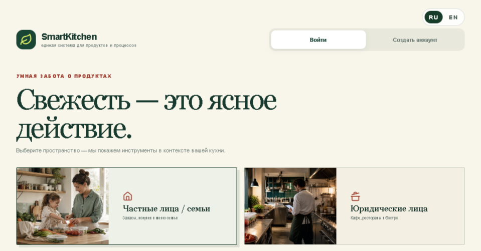

02 / Food & Hospitality
Кафе и рестораны
Продукты под контролем. Меньше ручной сверки.
Автоматизация повседневных задач кухни и управляющего: отчёты по срокам годности, поиск по инструкциям и контроль предложений конкурентов.
Задачи бизнеса
Где можно убрать рутину
Сотрудники повторно спрашивают о правилах и процессах.
Управляющий вручную собирает информацию для решений.
Проекты и применение
Основа уже есть
Ниже — возможности моих проектов и то, как их можно адаптировать под ваш процесс. Подключение данных и сервисов компании входит в отдельную настройку.
01
SmartKitchen / FOOD_AI
Отчёт по срокам годности
Что есть в проекте
Реализован CLI-прототип: проверка подтверждённого инвентаря и отчёты Markdown, JSON и HTML. Есть необязательные AI-подсказки блюд.
Как применить в компании
Настроить ежедневный отчёт для кухни. POS-адаптеры читают справочники; остатки и сроки нужно подтверждать отдельно. Подсказки блюд проверяет сотрудник.
02
RAG-ассистент
База знаний для команды
Что есть в проекте
В проекте rag-assistant-final реализован поиск по документам через ChromaDB и формирование ответа на основе найденного контекста.
Как применить в компании
Заменить базу автозапчастей на инструкции заведения: открытие смены, приём поставок, хранение и обслуживание. Проверить ответы на вопросах сотрудников.
03
Competition Monitor
Сравнение публичных предложений
Что есть в проекте
В проекте есть реестр позиций, история цен, сравнение и отчёты.
Как применить в компании
Адаптировать позиции под сопоставимые блюда и предложения заведений. Источники, размеры порций и условия акций сверяются при настройке.
Первый шаг
Начать с ежедневного отчёта кухни
Подтверждённый список продуктов → проверка сроков → отчёт «использовать в первую очередь» → просмотр ответственным. Проверяем даты и попадание каждой позиции в нужную категорию.
- Что понадобится
- Пример инвентаря с остатками и сроками, список ответственных и название используемой учётной системы.
- Что измерим
- Время подготовки отчёта, полнота учёта сроков и количество позиций, требующих ручного уточнения.
Из портфолио
SmartKitchen
Пример интерфейса исходного проекта. Отраслевые сценарии и подключения обсуждаем под ваши данные.

Обсудим процесс
С чего начать в вашей компании?
Напишите, где сейчас возникает ручная работа и какие сервисы вы используете. Я предложу первый сценарий и состав работ; сроки и стоимость согласуем после разбора задачи.